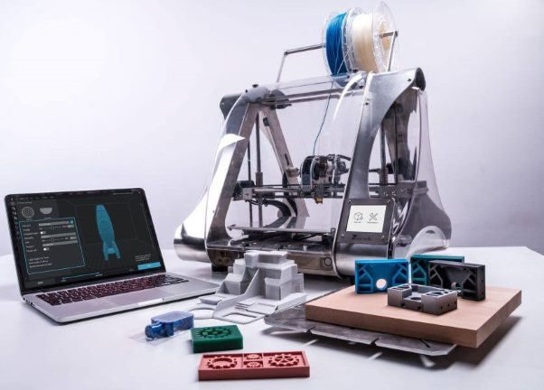

Nuestros Clientes
En PrinterLand, somos una empresa que ofrece un servicio de impresión 3D
personalizado y de calidad. Nuestros clientes nos eligen para comprar artículos impresos en impresora 3D
porque:
-
Ofrecemos precios competitivos y descuentos exclusivos para nuestros clientes registrados.
-
Contamos con un catálogo actualizado y diverso, con productos para todos los niveles de experiencia y tipos
de impresión 3D.
-
Tenemos un sistema de envío rápido y seguro, con entrega en 24/72 horas y opción de recogida en tienda.
-
Disponemos de un servicio de atención al cliente profesional y cercano, que resuelve cualquier duda o
incidencia que puedan tener nuestros clientes.
-
Somos una empresa comprometida con la calidad y la satisfacción de nuestros clientes, por eso ofrecemos
garantía de devolución y reembolso en todos nuestros productos.
-
Ofrecemos una gran variedad de opciones de diseño, materiales, colores y acabados para crear productos
únicos y a medida.
-
Contamos con una plataforma online fácil de usar, donde los clientes pueden subir sus propios archivos o
elegir entre miles de modelos disponibles en nuestra Tienda.
-
Tenemos un equipo de expertos en impresión 3D que revisan cada pedido, optimizan los parámetros de
impresión y garantizan la calidad del producto final.
-
Disponemos de impresoras 3D de última generación, capaces de imprimir objetos de gran tamaño y complejidad,
con una alta resolución y precisión.
-
Somos una empresa comprometida con el medio ambiente, por eso utilizamos materiales reciclados y
biodegradables, y reducimos al mínimo los residuos y las emisiones.
En Printy3D, queremos ser tu socio de confianza para tus proyectos de impresión 3D. Por
eso, te invitamos a visitar nuestra web y a contactarnos si tienes cualquier consulta o sugerencia.
Estaremos encantados de atenderte y ayudarte a imprimir tus ideas en 3D.
Conoce más sobre el proceso de Impresión 3D
Diseño y PLanificación
El diseño de un producto de impresión 3D es un proceso creativo que implica varias etapas, desde la idea
inicial hasta el prototipo final. Primero se define el problema o la necesidad que se quiere resolver con el
producto, o sea la finalidad del mismo. Luego se configuran los parámetros de impresión, tanto así como el material, la
temperatura, la velocidad, el relleno y el soporte que se va a usar. Y por último, siempre se busca mejorar el producto. Para eso nuestros especialistas
aplicaran los cambios necesarios para optimizar el rendimiento y la apariencia que le den un buen acabado final al pedido del cliente.


Impresión y Control del Producto
Luego de realizar el diseño de nuestro modelo 3D en un programa informático, se envía el archivo al software
de la impresora 3D
que lo divide en capas y calcula los parámetros de impresión. Después, se selecciona el material y el color
que se va a usar, y se carga en la impresora. A continuación, se inicia la impresión, que puede durar desde
minutos hasta horas, dependiendo del tamaño y la complejidad del objeto. Siempre que dure este proceso hay que
monitorear nuestro producto de manera visual para evitar fallas de impresión.
Testeo de Calidad
Por último, se retira el producto terminado de la impresora 3D y se le quitan los posibles restos de material
o soporte. En esta etapa es muy importante que se limen y se quiten las asperezas que puedan haber quedado
durante el proceso de impresión. Una vez que hicimos eso, evaluamos el resultado final de la pieza impresa, tanto
en términos de precisión, resistencia, acabado y funcionalidad. Para ello, se pueden aplicar diferentes
métodos y herramientas, como la inspección visual, el uso de calibres o micrómetros, las pruebas de esfuerzo o
las simulaciones por ordenador. El objetivo es asegurar que el producto cumple con los requisitos y
especificaciones del cliente o del proyecto.